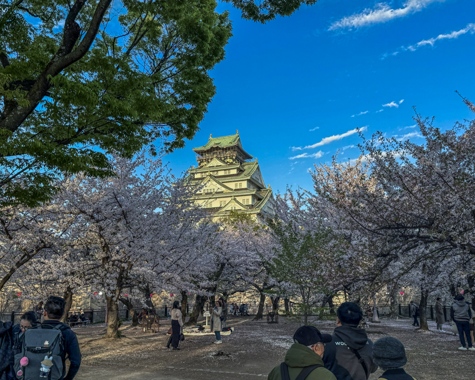
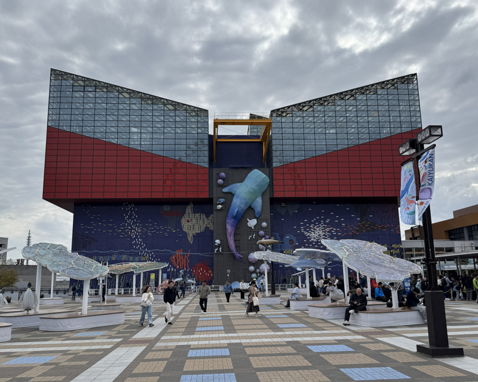
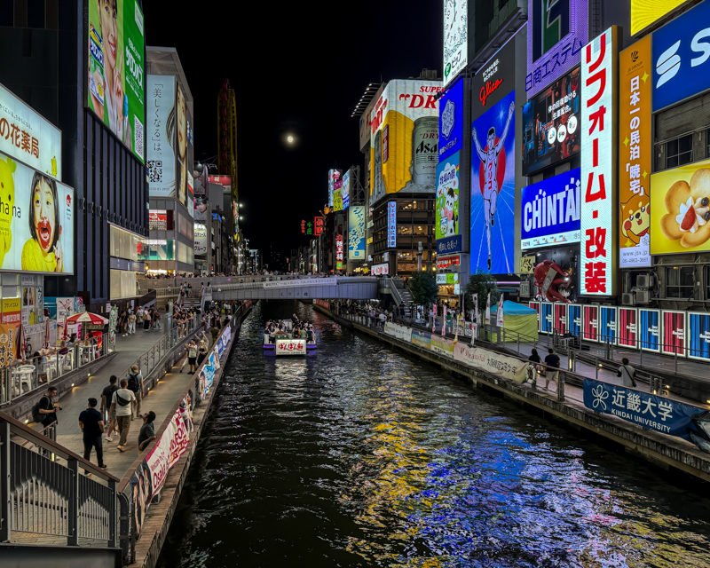
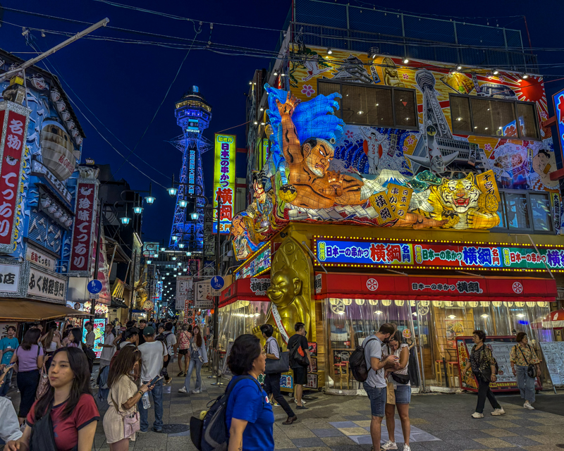

Osaka
大阪市
Osakan tunnus
- Osakan virallinen turisti-info sivusto
- Osakan kaupungin virallinen kotisivu (Japaniksi)
- Osakan wikipedia sivu
Saapuminen Osakaan
Kansainvälinen
Ulkomailta valtaosa saapuu Osakaan lentäen kansain kansainväliselle lentokentälle
関西国際空港.
Toinen suosittu julkinen kulkuveuvo kansainväliseen matkailuun on laivat. Osakassa
on kansainvälinen satama (Port of Osaka) mihin saapuu reittilaivat Shanghaista
(Japan-China International Ferry Co., Ltd), sekä Busanista (Sanstar Line Co.,
Ltd.)
Jos omistaa veneen tai on hyvä uimari, niin Osakaan on mahdollista saapua myös
omalla kulkuneuvolla, mutta sillon on hyvä tarkastaa Japanin CIQ-menettely
(Customs, Immigration, Quarantine), jo matkan suunnittelu vaiheessa.
Yksinkertaistettuna, se tarkoittaa sitä että Japaniin saapuessa on käytävä
satamassa, missä on tullausmahdollisuus (Port of Entry satama), jonka jälkeen voi
siirtyä niihin paikkoihin mihin on suunnitellut. Huomioitavaa on myös se että
rannikkopurjehdus on säännösteltyä.
Japanin sisältä
Tyypillisiä tapoja saapua Osakaan, on junalla, linja-autolla, lentäen, tai
autolla, mutta on sinne saapunut ihmisiä polkupyörälläkin (Saikoku Kaido on
kohtuullisen suosittu reitti Osakan ja Kioton välillä).
Junalla saavuttaessa Osakassa on kolme isompaa solmua, Namba ja Shin-Osaka ja
Umeda. Umeda on Länsi-Japanin vilkkain solmukohta (vuonna 2005 keskimäärin
2 343 727 päivittäistä käyttäjää).
Namban ja Umedan asemalla on paikallis- ja intercity junia, joten jos haluaa nopean
siirtymän esim Tokioon, niin sitten on siirryttävä Shin-Osakan asemalle, mikä
toimii Shinkansen asemana Osakassa. (lisätietoa Shinkansen junista Osakassa löytyy
Täältä)
Kotimaan lentoja lähtee molemmista Osakan lentoasemista, eli Kansain
kansainvälinen lentoasema (KIX), sekä Itamin lentoasema (ITM). Kansain
lentoasemalla, kotimaan liikenne sijaitsee toisessa kerroksessa. (Kansainväliset
lennot kolmannesta ja neljännessä kerroksessa)
Linja-auto verkosto on myös hyvin kattava, mainittavat asemat Umeda ja Osaka City
Air Terminal, mistä molemmista löytyy kaukoliikenteen linja-autoja.
Nähtävyyksiä
Osakan Linna
Osakan kuuluisin nähtävyys on varmasti sen 1500- luvulla rakennettu linna.
Linnan historia voidaan laskea alkaneeksi kun Ishiyama Hongan-ji
石山本願寺 perustettiin vuonna 1496.
Temppelilinnoitus oli buddhalaisten taistelumunkkien (osa Ikkō-ikki
一向一揆 ryhmittymää) käytössä, aina siihen
asti kunnes yksi kolmesta suuresta Japanin yhdistäjästä Oda Nobunagan
織田信長
joukot tuhosivat linnoituksen Ishiyama Hongan-ji sodan lopuksi 1580-luvulla.
Tuhotun linnoituksen paikalle Japanin toinen suuri yhdistäjä Toyotomi Hideyoshi
豊臣秀吉 määräsi linnan
rakennustöiden aloittamisen vuonna 1583. Nykyisen muotonsa linna sai vuonna 1931,
kun linna kunnostettiin kansalaisten lahoituksilla. Osakan linna on kokenut useita
tuhoutumisia, josta viimeisin oli vuonna 1945, kun Yhdysvaltain joukot pommittivat
linnaa, joka oli muutettu asetehtaaksi.
Linnan viimeinen restaurointi saatiin päätökseen vuonna 1997.
Linnalle saapuminen:
Osaka metro
JR
Keihan Railway
Osaka City Bus

Osakan linna 大阪城 (Ōsaka-jō) kirsikan kukinnan aikaan.
Osakan akvaario (Kaiyukan)
Toinen suosittu nähtävyys on Osakan akvaario, joka esittelee Tyynenmeren tulirenkaan elimistöä.

Osakan akvaario 海遊館 (Kaiyūkan)
Universal Studios Japan
Osakan akvaarion vierestä löytyy Universal Studios Japan.
Kyseessä on yksi kuudesta samannimisestä huvipuistosta ollen ensimmäinen
Yhdysvaltain ulkopuolella auennut (2001). Puiston omistaa Universal Destinations &
Experiences (UD&X). Puisto pitää sisällään 6 vuoristorataa ja 2 vesirataa.
Kuten joku saattaisi arvata, niin puiston teema on Universal studion elokuvat.
Kaupunginosia
Dōtonbori 道頓堀
Yksi Osakan pääasiallisia turisti- ja yöelämän keskuksia. Alue rajoittuu Dōtonbori kanaalin molemmilla puolilla, Dōtonboribashi sillalta (Namba) aina Nipponbashin sillalle (Chūō-ku) asti. Alue on kuuluisa suurista neon kylteistä joista jotkin ovat myös mekanisoituja. Alue on myös kuuluisa katuruuastaan, mutta kannattaa muistaa että kyseessä on turistirysä, joten katukeittiöiden hinta-laatu voi olla mitä vaan. Alueen todennäköisesti kuvatuin nähtävyys on jostain syystä Glico konsernin valomainos (Glico Man) Ebusu-bashin sillan vieressä. Mainos kuvaa juoksevaa miestä.

Dōtonborin kanava ja Glico Man mainos
Shinsekai 新世界
Shinsekai eli Uusi maailma on historiallinen kaupunginosa, minkä rakentamiseen on
otettu vaikutteita New Yorkin Coney Islandista (eteläinen puoli) ja Pariisista
(pohjoinen puoli)
Alueella sijaitsee myös Luna Park, joka on Japanin toinen huvipuisto, korvaten
Tokiossa tuhoutuneen puiston. Puistossa sijaitsee myös Tsutenkaku torni
通天閣/span> (taivaaseen kurkottava torni), minkä alunperin
valmistui vuonna 1912 Eiffel- mallisena. 1943 tornissa syttyi tulipalo, jonka
ansiosta se päätettiin purkaa ja sen teräs käytettiin sotateollisuuden
raaka-aineena. Uusi torni rakennettiin vuonna 1956. 103 metrisen tornin neonvalot
vaihtuvat muutamien vuosien välein, mutta tornin sponsori on pysynyt Hitachi jo
vuodesta 1957.

Luna Park ja taustalla 103m korkea Tsūtenkaku